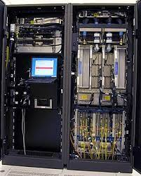

Bina Pradhan
Wellcome To My Simple Website
Introduction of Computer
A computer is a digital electronic machine that can be programmed to carry out sequences of arithmetic or logical operations (computation) automatically. Modern computers can perform generic sets of operations known as programs. These programs enable computers to perform a wide range of tasks. A computer system is a "complete" computer that includes the hardware, operating system (main software), and peripheral equipment needed and used for "full" operation. This term may also refer to a group of computers that are linked and function together, such as a computer network or computer cluster.

Mainframe Computer
A mainframe computer, informally called a mainframe or big iron,[1] is a computer used primarily by large organizations for critical applications like bulk data processing for tasks such as censuses, industry and consumer statistics, enterprise resource planning, and large-scale transaction processing. A mainframe computer is large but not as large as a supercomputer and has more processing power than some other classes of computers, such as minicomputers, servers, workstations, and personal computers. Most large-scale computer-system architectures were established in the 1960s, but they continue to evolve. Mainframe computers are often used as servers
